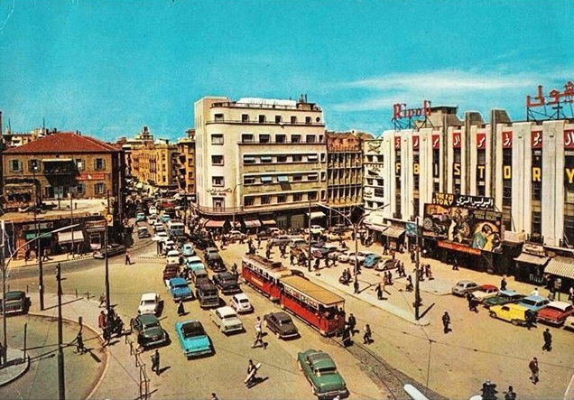
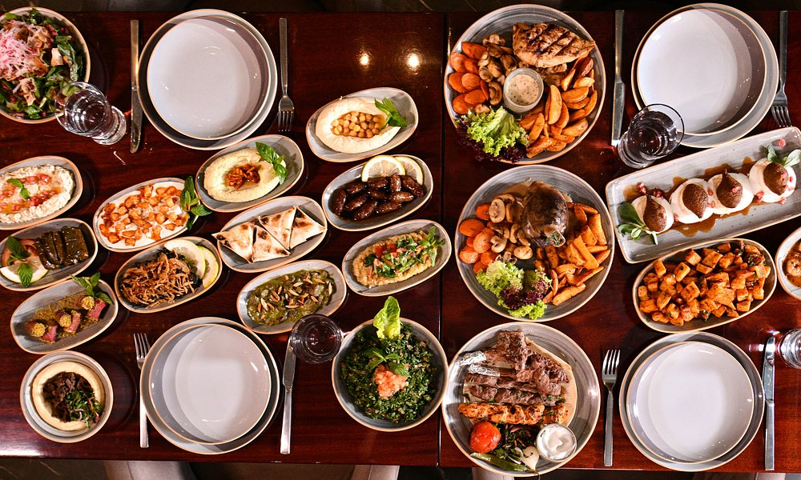

Beirut's Phoenician Roots
Fact 1
Beirut’s history stretches back to the Bronze Age, when it was a thriving
Phoenician port known as Berytus. It later became a Roman colony under
Emperor Augustus and was famous for its prestigious law school in the 3rd
century AD. After earthquakes and conquests, it flourished under the Ottomans
(1516–1918) as a trade hub before becoming part of French Mandate Lebanon
(1920–1943). Traces of these eras remain in ruins like the Roman Baths and
Ottoman-era buildings in Downtown Beirut.

The Paris of the Middle East
Fact 2
In the 1950s–60s, Beirut was the glamorous epicenter of the Arab world,
drawing celebrities (like Brigitte Bardot), intellectuals, and bankers.
The Corniche (seaside promenade), luxury hotels like the St. George, and
jazz clubs like Cave du Roy embodied its golden age. The civil war (1975–1990)
shattered this image, but pockets of its old charm survive in renovated
areas like Gemmayzeh and Sursock.
Multilingual City
Fact 3
Due to Lebanon’s French Mandate past, French is widely used in education and
media, alongside Arabic. English dominates business and pop culture, creating
a unique trilingual mix. Street signs, menus, and conversations often blend
all three—sometimes in the same sentence! The American University of Beirut
(AUB) and Université Saint-Joseph reinforce this global identity.

Food Capital
Fact 4
Beirut is the heart of Lebanese cuisine, where meals are social events.
Iconic dishes including, Mezze is small plates like tabbouleh, moutabbal
(eggplant dip), and kibbeh (spiced meatballs). A various of street food like
manakish for breakfast from Zaatar w Zeit in Sodeco, falafel sandwiches from
Sahnaoun in Hamra. All the sweet treats you can imagine like baklava from Al
Baba Sweets or knafeh (cheesy pastry) from Qaser al halaweyat. The city also
has a thriving foodie scene, from hip cafés in Mar Mikhael to high-end dining
like Em Sherif.